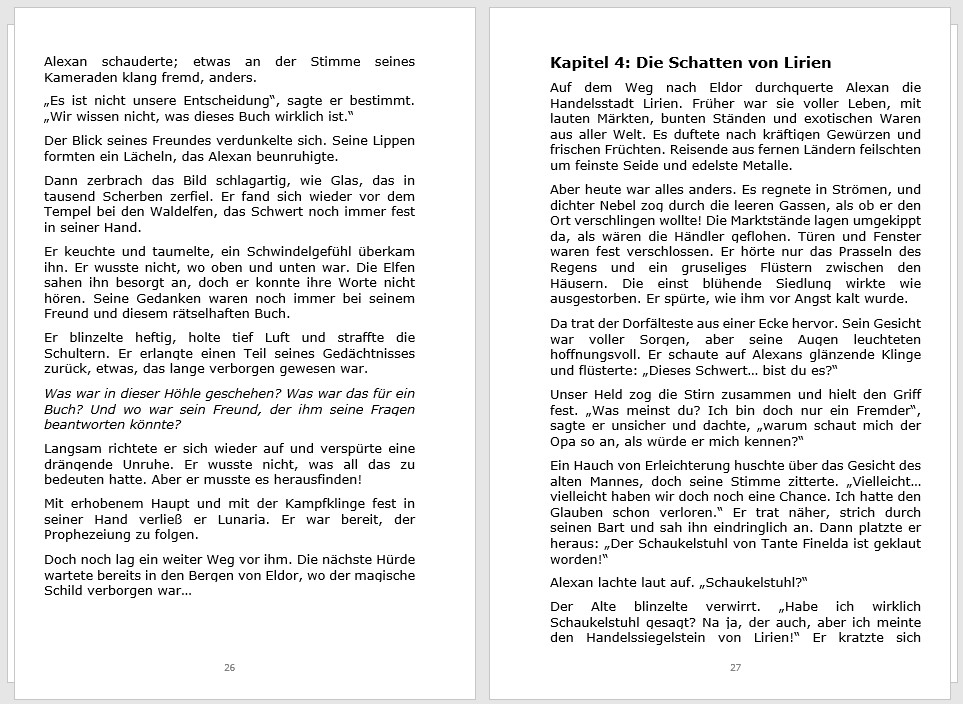
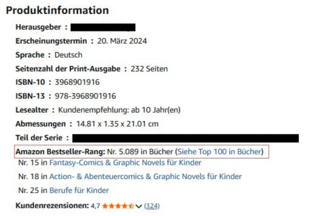
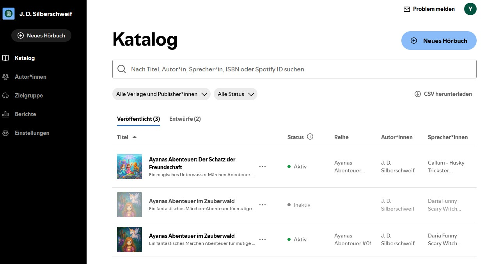

⏱️ Lesezeit Blog: 8 Min.
📄 Kinderbuch veröffentlichen im Selbstverlag:
Mein Selfpublishing-Weg von Layout bis Hörbuch-Vertrieb
In diesem Beitrag fasse ich die wichtigsten Lektionen aus meiner Selfpublishing-Reise zusammen: vom professionellen Buchlayout über die Wahl der richtigen Vertriebsplattform bis hin zu Amazon Werbung für Bücher und dem Vertrieb meiner Hörbücher. Vieles davon habe ich mir selbst erarbeitet, oft nach dem Prinzip Try and error, und ich hoffe, dass andere Selfpublisher, die ihr Kinderbuch veröffentlichen möchten, davon profitieren können.
🖋️ Professionelles Buchlayout in Word: Schriftart, Schriftgröße und Zeilenabstand
Als erfahrener Anwender von MS Office war es für mich kein Problem, das Layout meines Manuskripts vom Fantasy-Kinderbuch ALEXAN – Das Geheimnis von Mystiko selbst professionell zu gestalten: Inhaltsverzeichnis auf Knopfdruck, Seitenzahlen erst ab der Seite mit der eigentlichen Geschichte und Abstände zwischen den Absätzen für eine bessere Lesbarkeit. Bei der Schriftart habe ich mich für Verdana entschieden, nach Rücksprache mit ein paar Kindern, denen ich verschiedene Skripte mit unterschiedlichen Schriftarten vorgelegt habe. Die Schriftgröße beträgt 12 Pt. für Kinder ab 10 Jahren und 14 Pt. für Kinder ab 6 Jahren wie Ayanas Abenteuer im Zauberwald. Bei den Abständen habe ich innerhalb eines Absatzes 0 Pt. gewählt und nach einem Absatzwechsel 8 Pt. eingestellt. Ich habe von Anfang an direkt auf Selfpublishing gesetzt, da es sowieso viel zu schwierig ist, einen Verlag zu finden.
Für das Lektorat und Korrektorat habe ich gezielt KI eingesetzt, da ich dafür schlicht null Budget gehabt habe. Lektorat mit KI ist deutlich günstiger als ein professionelles Lektorat und für Selfpublisher ohne Budget eine echte Option. Die Sprachmodelle sind sehr hilfreich, um die Geschichte zu analysieren, wie etwa Charaktertiefe, Worldbuilding, Struktur und auch Grammatik. Dafür sind mehrere Durchläufe bei verschiedenen Anbietern nötig, um möglichst viele Fehler zu finden, wobei trotzdem nicht alle entdeckt werden. Bei einzelnen Sätzen oder Absätzen ist es kein Problem, aber wenn alles auf einmal kontrolliert werden muss, dann übersieht es auch Kleinigkeiten wie ein Mensch. Am Ende bleibt daher die eigene, aufmerksame Kontrolle unerlässlich. Keines der bekannten Sprachmodelle kann das geschulte Auge bislang vollständig ersetzen. Die eigentliche Herausforderung liegt aber woanders: Wer ein Manuskript zwanzig Mal gelesen hat, kennt ganze Passagen bereits auswendig, wodurch das Gehirn kleine Fehler automatisch überliest. Nur wer bewusst langsam liest, als würde man den Text zum ersten Mal sehen, findet auch die letzten Ungenauigkeiten.
Claude war zum Beispiel der Einzige, der mich nach einer Überprüfung auf wiederkehrende Wörter über das ganze Buch hinweg darauf aufmerksam gemacht hat. Ein Punkt, der den anderen Sprachmodellen nicht aufgefallen ist. Deshalb sollte man gezielt danach fragen, um diese durch Synonyme zu ersetzen. Bei mir kamen zum Beispiel Wörter wie Licht, Dunkel, Schatten, plötzlich oder groß besonders oft vor, und an den passenden Stellen ließen sie sich gut austauschen, immer mit Blick darauf, dass das Synonym den Kindern auch bekannt und nicht zu schwierig ist. Roter Faden und Struktur können die Sprachmodelle gut beurteilen, kleine Logikfehler dagegen nicht. Diese muss man entweder selbst durch ständiges kritisches Hinterfragen aufspüren oder von Testleserinnen und Testlesern aufdecken lassen.
Außerdem ist mir bei der Erstellung des Hörbuchs aufgefallen, dass sich noch einige Verbesserungen am Buchtext ergeben haben. Denn beim lauten Anhören der Geschichte fallen Wortwiederholungen und ähnliche Unstimmigkeiten viel stärker auf, als wenn man sie nur liest.

📖 Publikation über BoD (Books on Demand): Präsenz im stationären Buchhandel
Wer sein Kinderbuch veröffentlichen möchte und dabei auch im stationären Buchhandel präsent sein will, kommt an BoD kaum vorbei. Der große Vorteil ist die flächendeckende Verfügbarkeit in Buchhandlungen. Auch wenn die Publikation einmalig 39 Euro beziehungsweise 49 Franken kostet, war es mir das wert. Zudem ist der Kundenservice von BoD nach meiner Erfahrung sehr gut und zuvorkommend. Zu beachten ist allerdings der Unterschied zu Amazon: Jede Änderung am Manuskript bedeutet bei BoD eine Neuauflage, wodurch die Publikationsgebühr erneut anfällt. Man sollte sich also absolut sicher sein, bevor man den finalen Knopf drückt.
🛒 Publikation über Amazon Self Publishing: Reichweite, Sichtbarkeit und wichtige Stolpersteine
Amazon Self Publishing war für mich ein Muss. Die enorme Reichweite und die Möglichkeit, mit Werbung direkt die Sichtbarkeit für mein Kinderbuch auf Amazon zu erhöhen, helfen dabei, die Verkäufe aktiv zu pushen. Der Kundenservice ist hier zudem sehr schnell und effizient. Ein riesiger Vorteil für Selfpublisher: Änderungen am Manuskript können jederzeit unkompliziert und völlig kostenlos vorgenommen werden, egal wie viele Anpassungen man nachträglich noch macht.
Wichtig ist, schon im Titel beziehungsweise Untertitel Begriffe zu verwenden, nach denen tatsächlich gesucht wird, etwa Abenteuer, Fantasy, Gute-Nacht-Geschichte, Kinder, Märchen oder Prinzessin. Achtung: Es gibt eine maximal erlaubte Zeichenanzahl, und beim Taschenbuch lässt sich der Titel beziehungsweise Untertitel danach nicht mehr ändern, außer man geht über den Support, wenn dieser einwilligt. Idealerweise stimmt der Untertitel zudem mit demjenigen auf BoD überein, denn Amazon erkennt das Buch auch dort und verknüpft es automatisch mit der eigenen Produktseite, wo es dann als weitere Edition erscheint. Wichtig dabei: Amazon zeigt standardmäßig immer die günstigere Version zuerst an. Ist die BoD-Variante billiger als die Amazon-Variante, wird also die BoD-Ausgabe zuerst angezeigt. Prüft also eure Margen und setzt die Preise so, dass jeweils die Version mit der höheren Marge zuerst angezeigt wird.
P.S.: Eines der wichtigsten Learnings für mich war, sich von Anfang an für ein festes Pseudonym zu entscheiden, falls man keinen gewohnten oder passenden Namen verwenden möchte. Eine Änderung im Nachhinein ist zwar möglich, aber mit sehr viel Aufwand verbunden.
📈 Amazon Werbung für Bücher: Wie ich BSR-Ranking und Verkäufe gepusht habe
Bei BoD erzielt man ab und zu noch einen Verkauf über die Buchhändler, wenn auch eher begrenzt. Bei Amazon läuft es ohne Amazon Werbung für Bücher dagegen praktisch gar nicht: Das Buch bleibt sonst unsichtbar, weil Amazon ein Ranking vergibt, je nachdem wie viele Verkäufe ein Buch bereits erzielt hat. Je mehr Verkäufe, desto besser der Rang (der sogenannte BSR), und erst dann gibt es organische Verkäufe, also solche über die normalen Suchergebnisse, weil das Buch höher rankt und auf den vorderen Seiten erscheint. Verkäufe über Ads verbessern also den BSR, wodurch das Buch bei normalen Suchanfragen besser gelistet wird und ihr so mit der Zeit auch Verkäufe ohne Ads erzielt. Schaltet man die Ads jedoch ab, gibt es weniger Verkäufe, das Ranking sinkt, und damit gehen auch die organischen Verkäufe zurück. Ziel ist es deshalb, ein sich selbst tragendes Ads-Budget aufzubauen: Anfangs gibt man meist mehr für Ads aus, als man an Tantiemen verdient, um überhaupt erst Sichtbarkeit zu erlangen. Wichtig ist, die Amazon Werbung laufend zu optimieren, bis man insgesamt weniger ausgibt, als man an Tantiemen einnimmt.

Dafür richtet man Kampagnen mit sogenannten Targets ein, also Stichwörtern beziehungsweise Keywords oder bestimmten Büchern, bei denen die Ads ausgespielt werden sollen. Ich habe drei Kampagnen eingerichtet: Keywords, verwandte beziehungsweise ähnliche Bücher und Zelda-Artikel, also andere Bücher, Spielzeuge und Games. Die Keyword-Kampagne ist ziemlich einfach einzurichten: Man legt Keywords wie „Kinderbuch Fantasy" oder „Buch für Jungs" fest, und bei diesen oder ähnlichen Suchanfragen werden dann Ads geschaltet, sodass euer Buch prominent eingeblendet wird. Die anderen Kampagnen brauchen viel mehr Detailarbeit: Man muss Bücher finden, die ähnlich sind oder dieselbe Zielgruppe bedienen, und deren ASIN-Nummer in der Kampagne hinterlegen. Euer Buch wird dann genau bei diesen Büchern eingeblendet, wenn jemand sie sich ansieht. Mit einem ansprechenden Cover und Titel könnt ihr euch als echte Alternative positionieren oder die Leser sogar zu einem Zusatzkauf bewegen.
Für diese hinterlegten Targets muss man jeweils ein Gebot festlegen. Amazon macht dazu oft Vorschläge, aber nicht immer, und orientiert sich dabei an den Geboten, die andere bereits bezahlt haben. Einige Vorschläge sind brauchbar, andere wiederum deutlich zu hoch. Gebote über 0.50 sind definitiv zu hoch und sollten das Maximum für erfolgreiche Targets darstellen. Nehmt immer den Mittelwert der Amazon-Vorschläge oder das Minimum. Sind keine Vorschläge vorhanden, stellt ein tieferes Gebot ein, etwa 0.20 bis 0.30. Euer Gebot kommt zum Zug, wenn ihr die Höchstbietenden seid. Verrechnet wird der Betrag aber nicht schon bei der Einblendung (Impression), sondern erst, wenn jemand auf euer Buch beziehungsweise die Werbung klickt. Wichtig: Diese Gebote werden mit der Kennzahl CPC gemessen, also wie viel ein Klick im Durchschnitt kostet. Dieser sollte bei Büchern idealerweise zwischen 0.30 und 0.35 liegen. Setzt ihr eure Gebote aber zu niedrig an, wird euer Buch viel seltener eingeblendet, und im Umkehrschluss erzielt ihr dadurch auch deutlich weniger Verkäufe. Es gilt also, einen Mittelweg zu finden: Targets, die gut konvertieren, pusht man, und solche, die nach etlichen Klicks noch keine Verkäufe gebracht haben, senkt oder deaktiviert man.
Die wichtigsten Kennzahlen, um Amazon Ads zu optimieren, sind CTR, CPC, ACoS und Konversionsrate. Da Amazon diese Zahlen aber nur auf Basis der Ads-Verkäufe darstellt, ohne die organischen Verkäufe einzurechnen, sind sie etwas verzerrt und nicht ganz aussagekräftig, außer bei CTR und CPC. Diese beiden sind korrekt, weil sie sich ausschließlich auf die Werbeanzeigen (Impressionen und Klicks) beziehen. Wichtig ist deshalb, sich ein Gesamtbild zu machen. Dazu habe ich Claude gebeten, mir ein Excel-Sheet mit allen Kennzahlen samt Berechnungen zu erstellen, was hervorragend, fehlerfrei und mit einer ansprechenden Darstellung gelungen ist. Ich musste lediglich vorher alle nötigen Daten liefern, also die Verkaufspreise, die Tantiemen pro Buch beziehungsweise Edition und welche Kennzahlen berechnet werden sollen. Jetzt muss ich nur noch von Zeit zu Zeit die Impressionen, Klicks, Verkäufe und Werbeausgaben eintragen und sehe sofort alle wichtigen Kennzahlen, inklusive Halo-Effekt (organische Verkäufe dank den Ads-Verkäufen) und den erzielten Gewinn pro Monat. Dank diesen Kennzahlen konnte ich meine Ads laufend optimieren, um in die Gewinnzone zu kommen. Auch die detaillierten Amazon-Verkaufsauswertungen, die als CSV-Datei bereitgestellt werden, hat mir Claude übersichtlich aufbereitet, sodass ich sehe, welche Targets zu teuer sind oder gut beziehungsweise schlecht laufen, und so die Gebote und Kampagnen aktiv steuern kann.
P.S.: Ein Wechsel des Covers während laufender Werbekampagnen ist nicht zu empfehlen, da das den Amazon-Algorithmus stört und Impressionen sowie Klicks stark einbrechen lässt. Muss das Cover doch einmal ausgewechselt werden, sollte das eine einmalige, endgültige Entscheidung sein.
🎧 Hörbuch veröffentlichen als Selfpublisher: Spotify und Voices by Inaudio
Wer als Selfpublisher ein Hörbuch veröffentlichen möchte, hat heute mehr Möglichkeiten als je zuvor. Meine Erfahrungen mit Spotify waren dabei durchwegs positiv und der Prozess unkompliziert, genau wie schon beim ersten Hörbuch Ayanas Abenteuer im Zauberwald. Deshalb entschied ich mich, auch für das zweite Hörbuch „Ayanas Abenteuer: Der Schatz der Freundschaft" dort zu veröffentlichen, allerdings vor allem für die Sichtbarkeit. Viel verdienen lässt sich über Spotify nämlich kaum, da die Geschichte im Abo gehört und nicht einzeln gekauft wird, auch wenn man formal einen Preis hinterlegen muss. Die Tantiemen daraus sind entsprechend gering. Wer Hörbücher veröffentlichen über Spotify möchte, sollte das also primär als Reichweiten-Kanal betrachten, nicht als Einnahmequelle.

Zusätzlich habe ich das Hörbuch bei Google Play Books aufgeschaltet, wobei die Prüfung und Freischaltung dort einige Zeit in Anspruch nimmt, auch wenn der Prozess eigentlich einfach gestaltet ist. Dabei ist mir aufgefallen, dass mein Konto gesperrt war, eine entsprechende E-Mail dazu hatte ich leider übersehen. Der Grund: Beim Hochladen des E-Books zum ersten Buch Ayanas Abenteuer im Zauberwald hatte ich die reguläre ISBN-Nummer des Taschenbuchs verwendet, was offenbar als Urheberrechtskonflikt gewertet wurde. Wichtig zu wissen ist nämlich, dass eine ISBN-Nummer nur für die Edition gültig ist, für die sie ausgestellt wurde. E-Books und Hörbücher haben normalerweise gar keine eigene ISBN, schon gar nicht dieselbe wie das Taschenbuch. Die meisten Anbieter vergeben dafür stattdessen eine interne Nummer. Bei Google kommt zusätzlich dazu, dass ein Hörbuch nur veröffentlicht werden kann, wenn auch das passende E-Book bei Google publiziert ist.
Ich habe alles bereinigt und den Support angeschrieben, damit das Konto wieder entsperrt wird. Aus anderen Erfahrungen weiß ich allerdings, dass der Google-Support nur eingeschränkt gut funktioniert: Die Prüfungen laufen größtenteils automatisiert, nur sehr selten wird tatsächlich ein Mensch einbezogen, der den Fall genau ansieht. Ich warte jetzt einfach ab, ob meine Beschwerde wirklich von einem Menschen geprüft und freigegeben wird, mache mir aber nicht allzu große Hoffnungen. Falls nicht, werde ich es über einen anderen Google-Account erneut versuchen. Zum Glück war der erste Account nur ein vorübergehendes, wenig genutztes Konto für meine Autorentätigkeit. Mittlerweile habe ich eine eigene Domain und eine eigene E-Mail-Adresse, die ich für solche Tätigkeiten eigentlich verwende.
Um möglichst viele Hörerinnen und Hörer zu erreichen, hatte ich mich zudem für eine Veröffentlichung über den Distributor Voices by Inaudio entschieden. Meine Inaudio Erfahrungen waren dabei leider ernüchternd. Beim Hochladen bin ich auf eine hartnäckige Schwierigkeit gestoßen: Die Datei ließ sich zwar hochladen, doch danach ging es nicht weiter. Bei jeder Aktualisierung erschien ein Fehler, obwohl ich das LPF-Format mehrfach an die Vorgaben angepasst hatte, etwa bei Intro, Outro und den Pausen. Auch nach einer ganzen Nacht Wartezeit hat sich daran nichts geändert, woran es genau lag, lässt sich leider nicht nachvollziehen.
Bei der Spurensuche ist mir aber etwas Wichtiges aufgefallen: Bei klassisch eingesprochenen Hörbüchern lassen sich alle möglichen Anbieter wie Apple, Audible und weitere auswählen. Gibt man jedoch an, dass es sich um digitale Stimmen handelt, wofür ja die LPF-Datei nötig ist, stehen genau diese wichtigen Anbieter wie Apple, Audible, Google und Storytel gar nicht als Verkaufskanal zur Verfügung. Zusammen mit Spotify machen sie aber mindestens 90 Prozent des deutschen Markts aus. Übrig bleiben nur ein paar wenige, unbekannte Anbieter, die für den DACH-Raum kaum eine Rolle spielen, sowie Spotify, wo ich das Hörbuch ohnehin schon direkt und unkompliziert aufgeschaltet hatte. Google Play sollte ebenfalls direkt funktionieren, nur eben nicht über Inaudio, dazu kann ich aber noch kein abschließendes Urteil fällen.
Deshalb habe ich mich vorerst gegen Inaudio entschieden: Einerseits funktioniert es nicht auf Anhieb wie es sollte, andererseits erreicht man darüber fast niemanden. Ich werde ein bis zwei Jahre abwarten und beobachten, ob dann mehr Anbieter digitale Stimmen über Inaudio akzeptieren. Aktuell sind die wichtigsten Anbieter bei digitalen Stimmen noch sehr restriktiv, das wird sich mit der Zeit aber sicher ändern, denn das ist meiner Meinung nach die Zukunft, zumal selbst Netflix bei der Synchronisation von Filmen und Serien inzwischen auf KI setzt.
P.S.: Durch die Spotify-Auswertung habe ich erfahren, dass mein Hörbuch nicht nur im DACH-Raum, sondern auch in Luxemburg gehört wird. Bei meiner Recherche dazu habe ich herausgefunden, dass in Luxemburg schon ab der ersten Klasse Deutsch gelernt und ab der dritten Klasse teilweise sogar auf Deutsch unterrichtet wird. In der Schweiz ist das je nach Kanton sehr unterschiedlich geregelt, deutschsprachige Bücher werden aber meist nur in der Deutschschweiz gelesen und kaum in den anderen Sprachregionen.
Da ich neben den normalen Hörbüchern auch eine cineastische Version mit Hörspiel-Musik und Soundeffekten anbiete, werden diese erst recht von keinem Distributor akzeptiert, weil das Audiofile bearbeitet wurde. Deshalb hatte ich mich schon früh entschieden, diese Version selbst über meine eigens erstellte Homepage zu vertreiben, das war meines Wissens ohnehin die einzige Möglichkeit dafür. Das hat zwei große Vorteile: Erstens gibt es keine Vorgaben, die man einhalten muss, und zweitens behält man den Großteil der Einnahmen selbst. Wie ich ganz ohne große Vorkenntnisse eine eigene, vollumfängliche Homepage eingerichtet habe, lest ihr im nächsten Blog-Beitrag.
❤️ Danke fürs Lesen! Ich freue mich über jedes Feedback und jeden Kommentar!
👉 Neugierig auf meine Bücher und Hörbücher?
ALEXAN – Das Geheimnis von Mystiko: Die Legende der Drei Artefakte
Ayanas Abenteuer im Zauberwald
Ayanas Abenteuer: Der Schatz der Freundschaft